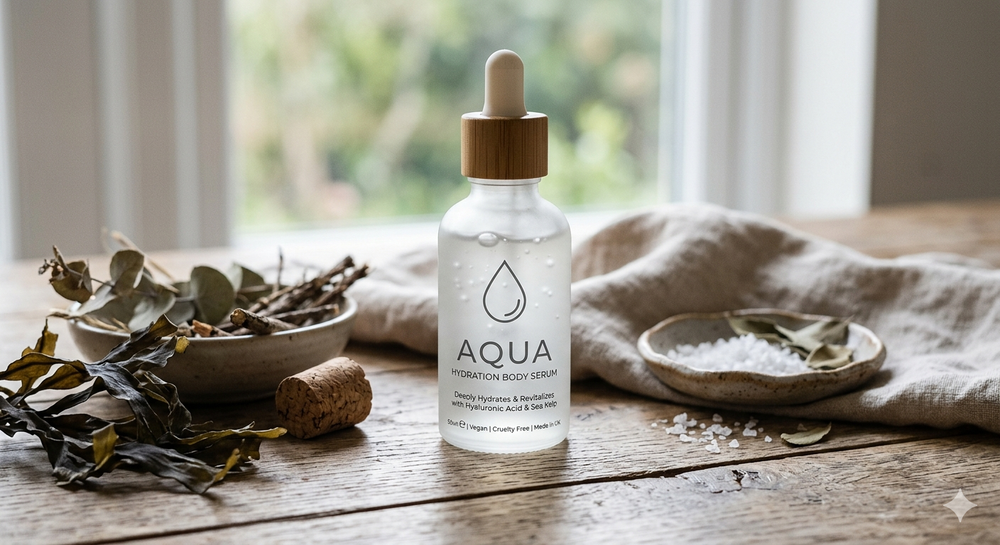
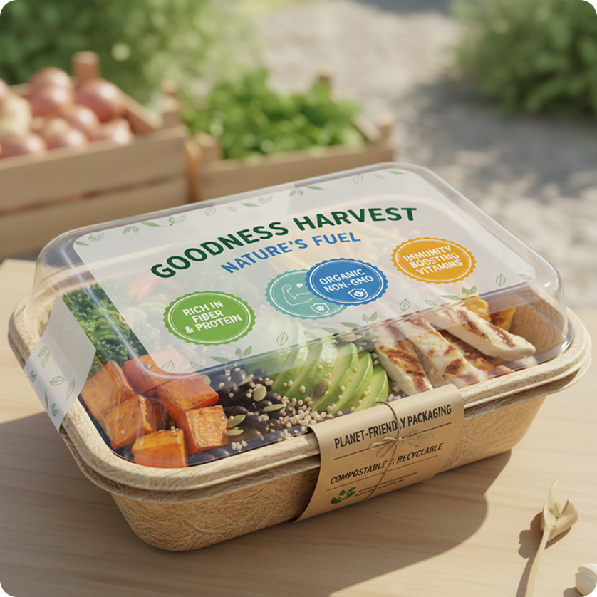

Imagery
Frames, grids, layered overlays, and graphic connectors. Imagery in PocketSeed is restrained and functional, never decorative for its own sake.
How imagery should feel
Like the rest of the system, the goal is quiet support. Photography is a tool that grounds the abstract (a credential, a claim) in the real (a product, a place). Use sparingly and treat consistently.
Real products, real places
Product photography on neutral surfaces. Sustainability infrastructure (wind, solar, regenerative agriculture). Avoid stock-photo hands-on-keyboards or "diverse team smiling."
Quiet, no filters
No heavy color grading, no duotones, no washed-out filters. The colors should sit comfortably with the system's warm-paper / ink palette without competing.
Rounded corners, never square-edged
Always wrap photos in .ps-image-frame so the radius and clipping are consistent. 14px radius matches cards and buttons.
The granola palette
No leafy stock close-ups, no glowing planet earth, no abstract geometric "tech" gradients. Photography is anchored in the world, not symbolic of it.
Frame variants
All available via aspect-ratio modifiers on .ps-image-frame. Source imagery should be cropped to the target ratio when possible; object-fit: cover handles the rest.



Multi-up image rows
Use .ps-image-grid for product lineups, evidence galleries, or process steps. 3-up is the default; 2/4-up via modifier.

Stack with overlay
Wrap an image frame in .ps-image-stack and add .ps-image-overlay children for annotations, pins, or floating cards.
Show how things relate
SVG paths drawn between elements via .ps-connector. Use to map credentials to products, evidence to claims, or any "X feeds into Y" diagram.
"Bottled in recycled glass, sourced from a verified UK supplier."
Path coordinates are illustrative — for production use, position the SVG over your real layout and either hard-code the curve or compute endpoints in JS so they track element positions on resize.
Where photography comes from
Until we commission a real shoot, source imagery from these in priority order:
- Real customer products — with their permission, used in case studies and product mockups.
- The official PocketSeed shoot (not yet commissioned) — generic product, place, and process imagery owned by us.
- Stock with editorial intent — Unsplash / Pexels / curated stock platforms, choosing images that look like they could have come from a real customer story.
Always crop to the target ratio at source. Don't rely on object-fit: cover to do compositional work — it's a fallback, not a strategy.